Käufer sehen, was Ihr Projekt besonders macht.
Wir analysieren Architektur, Grundrisse, Materialien und Umgebung und übersetzen sie in das, was Käufern wichtig ist: Privatsphäre, Licht, Raum, eine Art zu leben.
Wir machen Architektur, Design und Umgebung Ihres Projekts online sichtbar, damit sich Käufer ihr Leben dort vorstellen können, lange bevor das Haus steht.
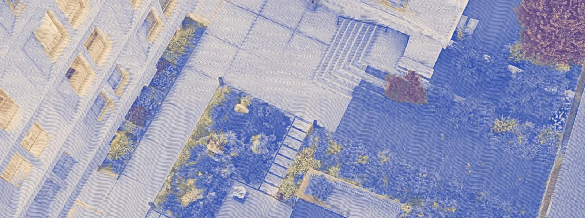
Ausgangslage
Wer eine neue Wohnung kauft, recherchiert gründlicher als bei fast allem, was er je gekauft hat. Diese Recherche findet großteils online statt, lange bevor das Gebäude überhaupt steht. Meist finden Interessenten dort nur dieselben drei Renderings in Dauerschleife.
Wir zeigen, was Renderings nicht zeigen können: die Nachbarschaft, die Materialien, die Menschen, die das Projekt bauen – erzählt als Geschichte, in der man leben möchte. Konsequent veröffentlicht, vom Launch bis zur Übergabe.
Sie bauen. Wir sorgen dafür, dass es gesehen wird.
Lösung
Wir analysieren Architektur, Grundrisse, Materialien und Umgebung und übersetzen sie in das, was Käufern wichtig ist: Privatsphäre, Licht, Raum, eine Art zu leben.
Wir fotografieren vor Ort, interviewen die Menschen hinter dem Projekt und dokumentieren den Baufortschritt.
Neue Posts und Videos für Nachfassgespräche und vor Besichtigungen machen Ihre Social-Media-Kanäle zu einer laufend wachsenden Ressource für den Verkauf.
Jeder Beitrag verweist auf Ihre Website oder Ihre Anfragekanäle. Ein monatlicher Bericht zeigt Klicks und Anfragen.
„Es ärgert mich jedes Mal, wenn ein sorgfältig gestaltetes Projekt so präsentiert wird, als könnte es überall stehen.“
Bauträger verkaufen Quadratmeter. Käufer suchen ein Zuhause. Wir übersetzen zwischen beiden.
Anna positioniert und launcht seit 2014 Premium-Wohnprojekte, zuerst in Moskau, wo sie die Agentur RUPOR gegründet und geleitet hat, heute in Wien.
Strategie und Creative Direction verantwortet sie bei jedem Projekt persönlich.
Referenzen
Eine Auswahl aus Annas Arbeit und der ihres Teams im Marketing für Premium-Immobilien.
Kommunikationsstrategie · Luxusimmobilien-Marketing
Launch einer Branded Residence
Wir entwickelten die Launch-Kommunikation für eine Armani/Casa Branded Residence und übersetzten die Designidentität der Marke in ein Angebot für Luxusimmobilien. Gemeinsam mit dem internationalen Markenteam stimmten wir Botschaften, Inhalte und visuellen Auftritt mit den globalen Richtlinien ab und sorgten so für einen konsistenten Markteintritt.
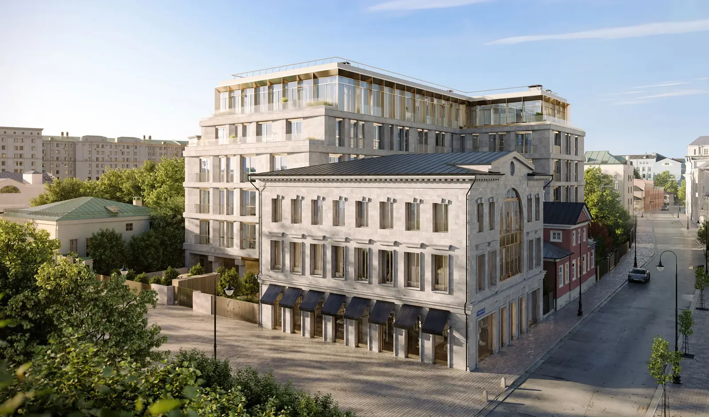
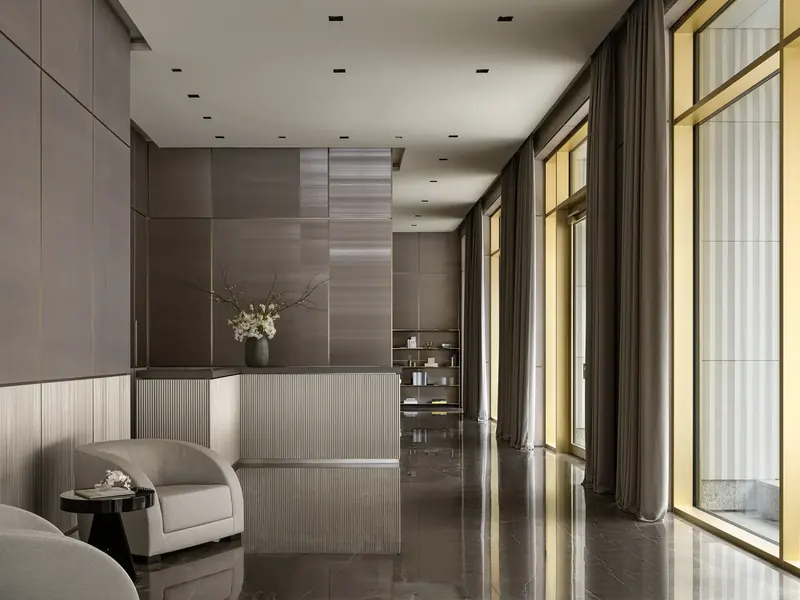
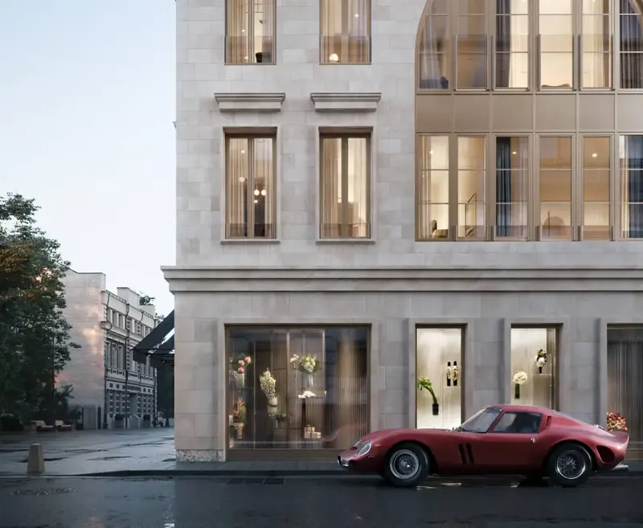
Launch-Strategie · Social-Media-Management · PR · Events
Von der Positionierung vor dem Launch bis zur laufenden Vermarktung
Wir entwickelten Positionierung und Launch-Kommunikation für Tessinsky 1, ein Luxus-Wohnprojekt, das historische und zeitgenössische Architektur verbindet. Unsere Arbeit umfasste Immobilien-PR, Social-Media-Strategie, visuelle Inhalte und ein Launch-Event mit 25 Journalisten und Influencern. Laufende Kommunikation begleitete das Projekt während der gesamten Zusammenarbeit; es war in weniger als zwei Jahren ausverkauft.
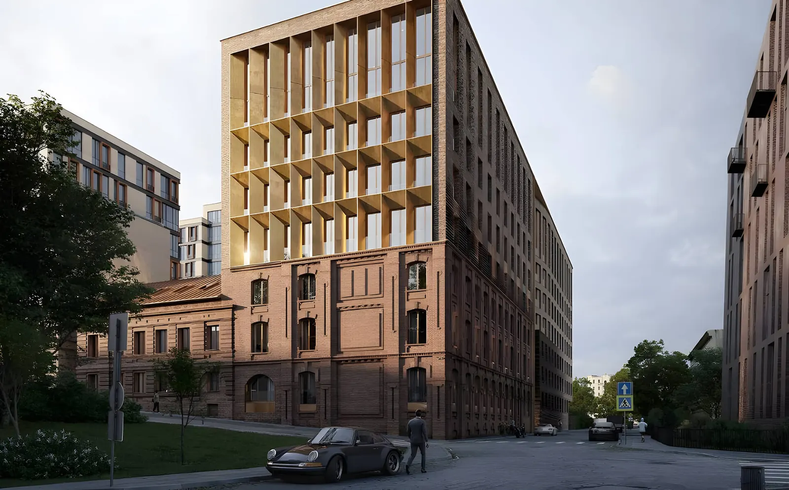
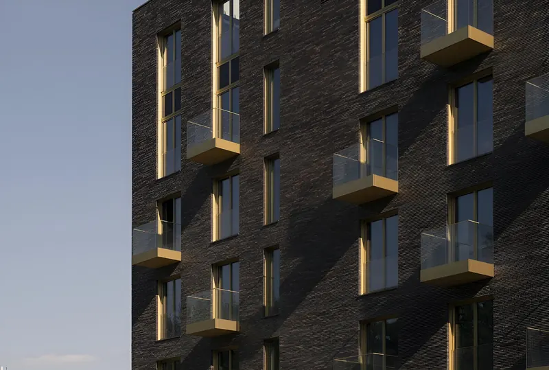
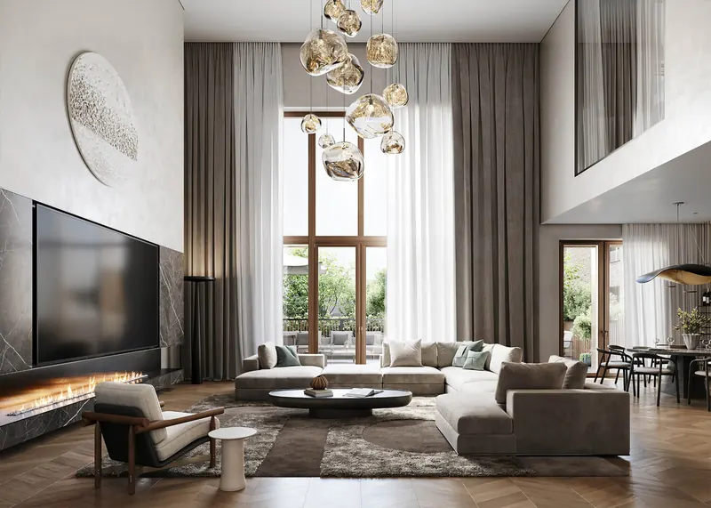
Social Media · Influencer-Marketing · Performance-Marketing-Support · PR · Reputationsmanagement
Nachfrage für Premium-Wohnungen aufbauen
Wir positionierten ein Projekt am Fluss rund um Architektur, Natur und Wohlbefinden. Immobilien-PR, Social-Media-Management, Influencer-Marketing, Makler-Events und Online-Reputationsmanagement begleiteten den Launch und die laufende Vermarktung. Das Projekt zählte 2023 und 2024 zu den fünf meistverkauften Premium-Wohnprojekten Moskaus.
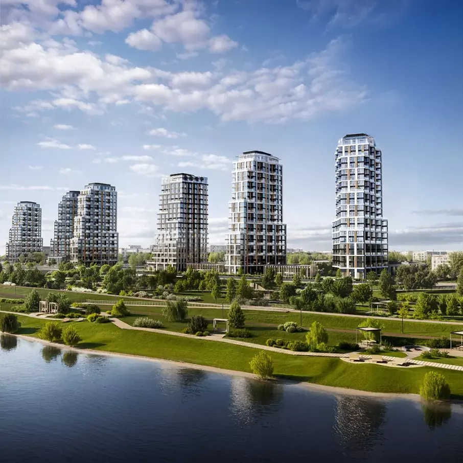
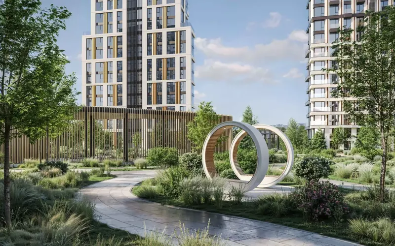
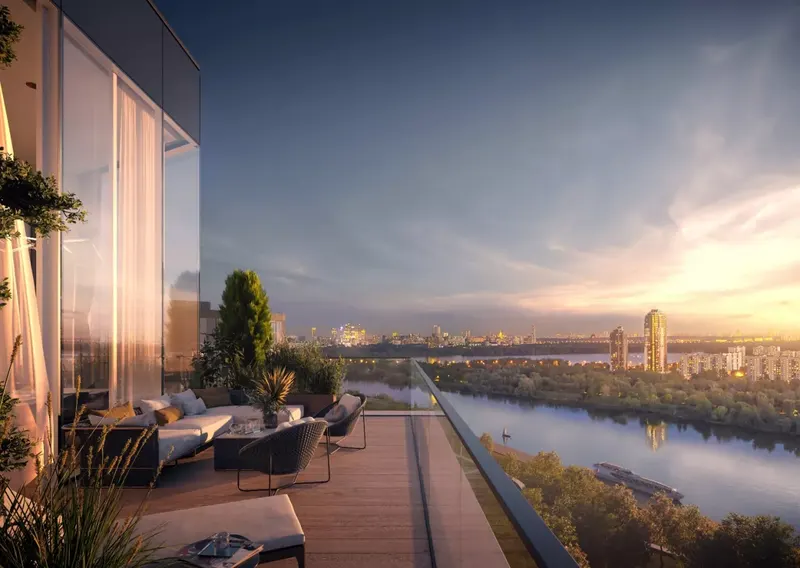
Social-Media-Management · Markenkooperationen · PR · Events
Luxusimmobilien-Marketing über Design und Lifestyle
Wir betreuten Social Media, PR und Events für Artisan, ein Luxus-Wohnprojekt im Portfolio der Schweizer Finanzgruppe Valartis. Unsere Arbeit verband Social-Media-Strategie, visuelle Konzepte und Content-Planung mit Medienarbeit und Markenkooperationen. Redaktionelle Geschichten über Architektur, Interieur und Lifestyle hielten das Interesse auch jenseits von Baufortschrittsmeldungen wach.
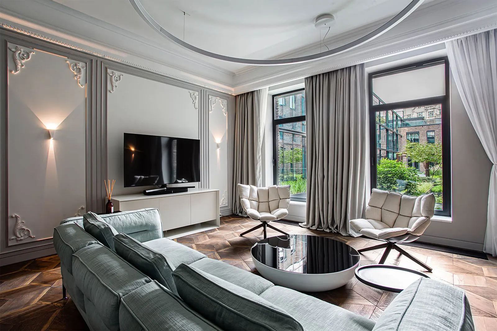
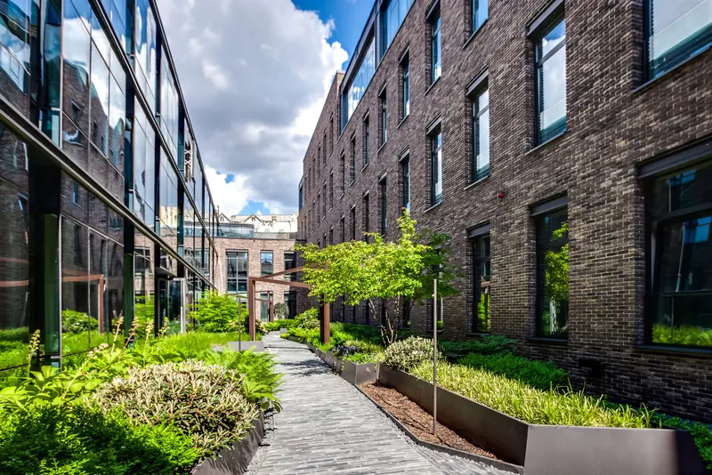
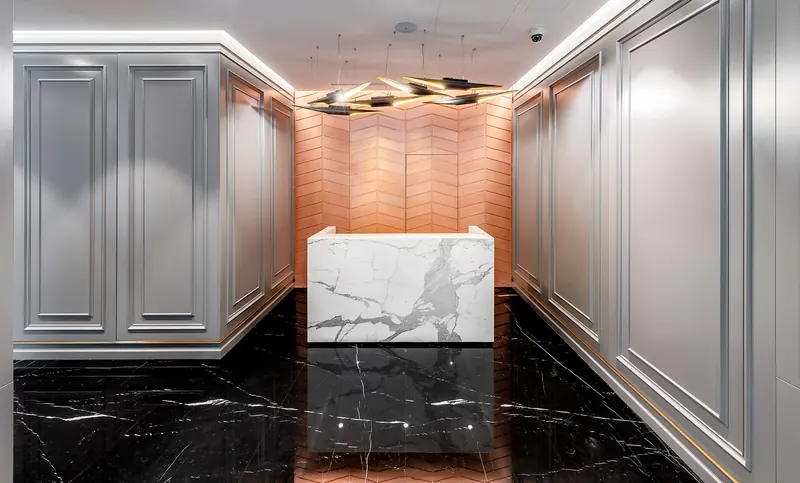
Social-Media-Management · Markenkooperationen · PR · Events
Sichtbarkeit für Luxus-Residenzen erhalten
Für Turandot Residences, Teil des Immobilienportfolios der Schweizer Finanzgruppe Valartis, übernahmen wir Immobilien-PR, Social-Media-Management und Event-Begleitung. Unsere Arbeit umfasste visuelle Konzepte, Content-Planung und Veröffentlichung, Medienarbeit und Markenkooperationen. Als die Baunachrichten weniger wurden, hielten Sonderprojekte und neue redaktionelle Blickwinkel das Projekt sichtbar.
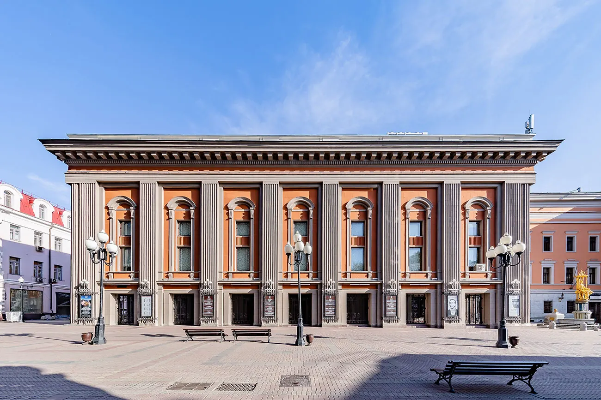
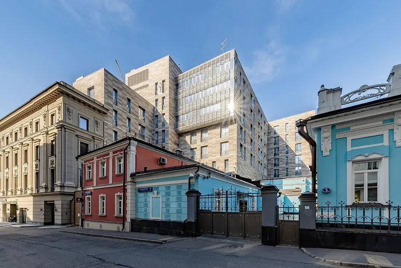
PR · Reputationsmanagement · Stakeholder-Dialog
Denkmal-Umnutzung unter öffentlicher Beobachtung kommunizieren
Wir entwickelten Positionierung und Kommunikation für die Umwandlung eines denkmalgeschützten Wahrzeichens in einen Ort mit gemischter Nutzung. Denkmal-PR, Stakeholder-Dialog, Expertenkommentare und Reputationsmanagement in Social Media gingen auf Bedenken zu Erhalt und Umbau ein. Die Kampagne brachte über 60 Medienberichte und eröffnete den Dialog zwischen Bauträger, Behörden und Architekturszene.
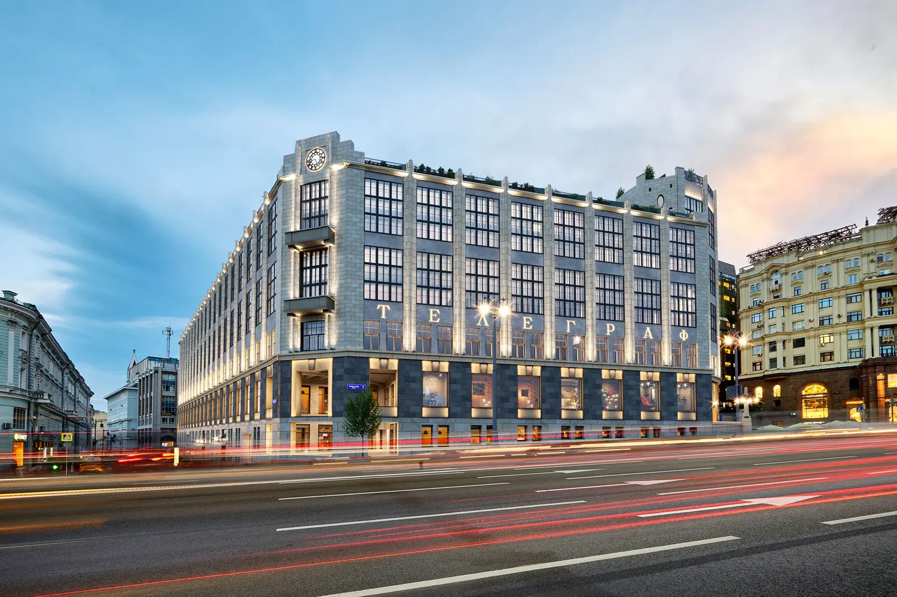
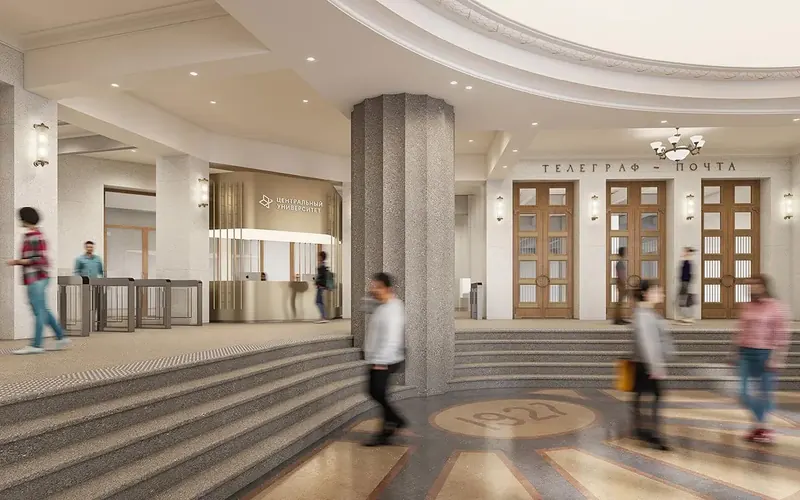
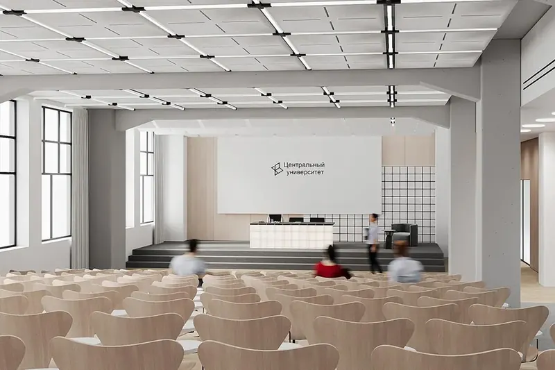
Architektur-PR · Internationale Medienarbeit
Internationale Sichtbarkeit für ein Weingut als Reiseziel
Wir entwickelten eine internationale PR-Kampagne, die die Architektur des Weinguts mit Wein, Design und Reisen verband. Gezielte Medienarbeit und Storytelling sicherten Berichte unter anderem in ArchDaily und Wine Spectator. Das Projekt kam zudem auf die Shortlist des World Architecture Festival und schärfte so sein internationales Profil.
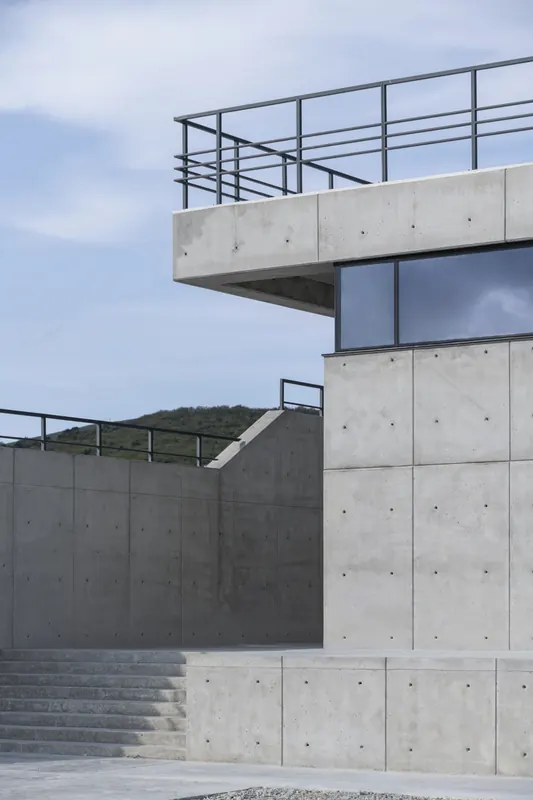
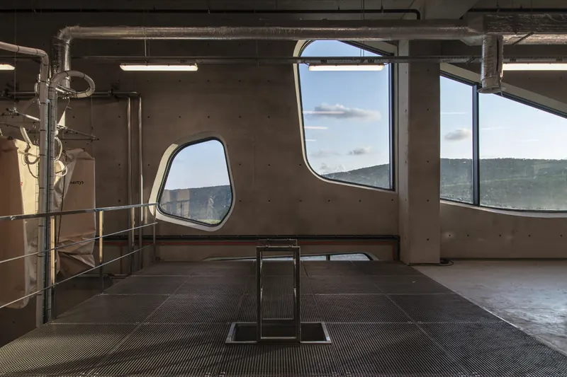
Die hier vorgestellten Projekte veranschaulichen die berufliche Erfahrung von Anna Neitzel (vormals Cheprakova) und ihren Teams, einschließlich der Tätigkeiten im Rahmen von RUPOR. Rechte an fremden Bildern, Architektur, Entwürfen und Marken verbleiben bei den jeweiligen Rechteinhabern. Bildrechte
Pakete und Preise
€ 4.500
Einmalig, zum Start
Wie Ihr Projekt online auftreten soll – aufgesetzt und startklar in rund drei Wochen.
Ebenfalls enthalten
Analyse Ihrer bestehenden Unterlagen und Ihres digitalen Auftritts. Wettbewerbsanalyse. Kanal-Prioritäten und Content-Säulen. Erster Rollout.
€ 3.500
Pro Monat
Konsequente Kommunikation über den gesamten Verkauf.
Ebenfalls enthalten
Instagram, Facebook und LinkedIn. Content-Planung, Texte, Grafikdesign, Veröffentlichung, Community-Management und monatliches Reporting. Die Shootings zeigen das Projekt oder seine Umgebung.
€ 4.500
Pro Monat
Alles aus Essential, dazu mehr Inhalte, Video und Interviews.
Ebenfalls enthalten
Alles aus Essential. Die monatlichen Shootings können das Projekt, seine Umgebung oder Ihr Team zeigen.
Auf Anfrage
Optionale Ergänzung
Kampagnen, die die richtigen Zielgruppen auf Ihre Website bringen.
Gut zu wissen
Mediabudget und Drittkosten sind nicht enthalten. Zusätzliche Leistungen werden vorab vereinbart und kalkuliert.
Nächster Schritt
Vereinbaren Sie ein 20-minütiges Gespräch mit Anna über Ihr Projekt und das, was es online braucht.
Gespräch vereinbarenSo arbeiten wir
Sie
Sie benennen eine Ansprechperson, die Projekt-Updates teilt, den Zugang zur Baustelle organisiert und Fakten bestätigt.
Gemeinsam
Ein monatlicher Termin, um Prioritäten zu setzen. Alle Inhalte kommen vor der Veröffentlichung zur Freigabe zu Ihnen.
Wir
Alles andere.
Zusammenarbeit
Wir geben Ihrem Projekt ein eigenes Kommunikationsprogramm: eine klare Identität, eigene Inhalte und einen konsistenten Auftritt auf seinen eigenen Kanälen.
Wir arbeiten mit Ihrem Makler und Ihrem Vertriebsteam zusammen und nutzen ihr Wissen über die Fragen der Käufer für Inhalte, die sie auch in Nachfassgesprächen und vor Besichtigungen teilen können.
Ja. Wir prüfen, was bereits vorhanden ist, und bauen darauf auf. Eine bestehende Strategie wird zu einem konkreten Content- und Kanalplan, Ihre Markenidentität gibt den visuellen Auftritt vor.
Wir arbeiten mit Ihrem Marketingteam zusammen oder übernehmen die erfahrene Kommunikationsleitung, wo es intern kein eigenes Team gibt.
Wir bereiten Inhalte über einen gemeinsamen Freigabeprozess zur Prüfung vor. Ihre Ansprechperson prüft die Projektfakten und bündelt das Feedback Ihres Teams.
Freigabefristen vereinbaren wir zu Beginn, damit Inhalte planmäßig erscheinen können. Der erste Rollout umfasst eine gebündelte Korrekturrunde; der Zeitplan hängt davon ab, dass Unterlagen, Zugänge und Freigaben rechtzeitig vorliegen.
Laufende Kommentare und Nachrichten in Social Media beantworten wir auf Basis abgestimmter Projektinformationen. Fragen zu Verfügbarkeit, Preisen, Besichtigungen oder Verhandlungen gehen an Ihr Vertriebsteam.
Heikle Themen und Beschwerden leiten wir an die zuständige Person weiter.
Inhalte
Dann gibt es bereits eine Geschichte zu erzählen: die Ideen der Architekten, die Grundrisse, die Materialwahl, die Ausblicke, die Umgebung und die Menschen hinter dem Projekt.
Wir kombinieren freigegebene Renderings mit eigener Fotografie, Interviews und Updates zum Baufortschritt und unterscheiden dabei klar zwischen Geplantem und Fertiggestelltem.
Wir organisieren die Produktion und erstellen die visuellen Inhalte für den vereinbarten Content-Plan, auf Basis Ihrer Markenidentität und freigegebener Projektunterlagen.
Essential umfasst ein Shooting alle zwei Monate, Signature ein Shooting pro Monat. Motive und benötigte Formate stimmen wir vorab ab. Zusätzliche Produktionen sind separat möglich.
Die Accounts Ihres Projekts bleiben in Ihrer Hand.
Die Fotografie umfasst nicht-exklusive, zeitlich unbegrenzte Nutzungsrechte für Ihre eigenen digitalen Kanäle, Unternehmenskommunikation, PR und Vertriebsunterlagen. Zusätzliche Rechte für Werbung oder die Nutzung durch Dritte klären wir vor der Veröffentlichung.
KI kann bei Recherche, Entwürfen und Produktion unterstützen. Gute Immobilienkommunikation braucht aber weiterhin genaue Projektkenntnis, eigenes Material, redaktionelles Urteilsvermögen und eine klare visuelle Linie.
Für Inhalte, ihre Richtigkeit und ihre Präsentation bleibt unser Team verantwortlich.
Ergebnisse
Bezahlte Kampagnen können die Lead-Generierung unterstützen, wenn Website, Anfrageprozess und Tracking bereit sind. Ziele und KPIs vereinbaren wir abhängig von Mediabudget, Website und verfügbarem Tracking.
Vor dem Start legen wir fest, was als relevante Anfrage zählt und wie sie gemessen wird. Das Feedback Ihres Vertriebs hilft uns, die Qualität der Leads einzuschätzen und die Kampagnen zu verbessern.
Wir erheben einen Ausgangswert und berichten monatlich über relevante Kennzahlen wie Reichweite, Interaktionen und Website-Klicks.
Wo das Tracking es erlaubt, berichten wir auch über Anfragen und Kampagnenkosten. Das Feedback Ihres Vertriebs verbindet die digitalen Daten mit dem tatsächlichen Käuferinteresse und der Qualität der Gespräche.
Der erste Rollout schafft einen konsistenten Auftritt und regelmäßige Veröffentlichungen. Die ersten drei Monate nutzen wir, um die Resonanz zu bewerten und Inhalte und Werbung zu schärfen.
Anfragen und Verkäufe hängen auch von Objekt, Preisgestaltung, Marktlage, Mediabudget und der Nachbetreuung durch den Vertrieb ab. Wir vereinbaren realistische Ziele für die jeweilige Projektphase.
Konditionen
Monatspakete starten mit einer Mindestlaufzeit von drei Monaten. Danach sind sie gemäß den vereinbarten Vertragsbedingungen monatlich kündbar.
Ja. Positionierung und Launch-Kommunikation bieten wir als eigenständig kalkulierte Projekte an.
Kontakt
Vereinbaren Sie ein 20-minütiges Gespräch mit Anna über Ihr Projekt, seine Launch- oder Verkaufsphase und das, was es online braucht.
Wir prüfen, ob wir zusammenpassen, und skizzieren passenden Umfang, Zeitplan und Honorar.